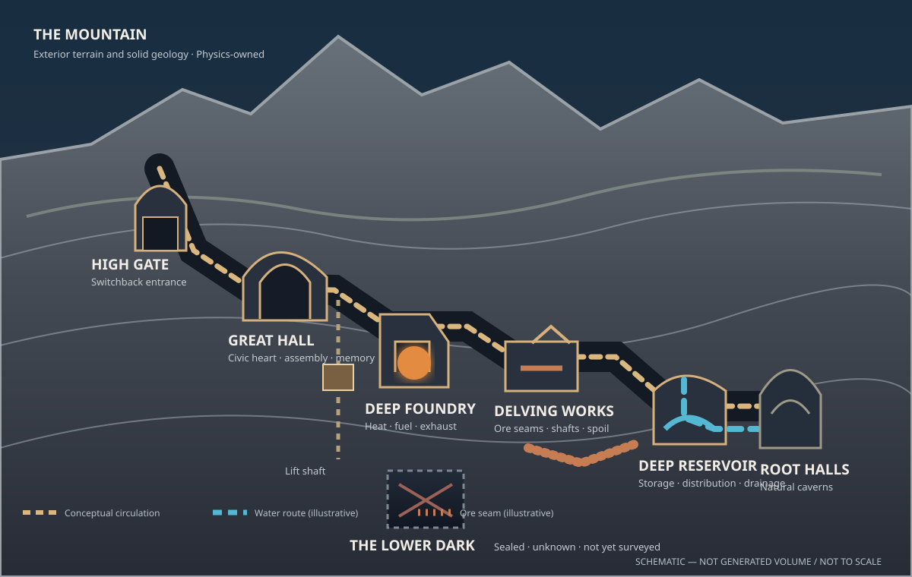

The Dwarven Mountain Fortress
Explore the intended districts of a civilization built into a mountain that existed long before its walls.
AUTHORING PREVIEW · CONCEPTUAL GEOMETRYA fortress written into stone
The cutaway below is an authored concept illustration. It communicates the intended composition, not a generated physical volume, measured geology, or playable map. The real mountain must be generated by Physics before this becomes a true cutaway.

Ownership: Physics generates the terrain and physical mountain volume. FSM_Dungeon defines internal spaces and topology. SURPS defines the dwarven people and society. The host composes them; Renderer and Visualization present them.
Explore the fortress atlas
Select a district to inspect its purpose, systems and the questions the eventual world model must answer.
From concept to explorable world
- Physics produces a reproducible exterior terrain and bounded 3D solid mountain volume.
- FSM_Dungeon places natural voids, excavations, constructed chambers and passages in the shared coordinate frame.
- SURPS composes inhabitants, households, guilds, civic institutions and organizations.
- Validated environmental providers add water, heat, air, materials and structural consequences.
- Pages consumes canonical generated records and becomes a true explorer with cutaway, selection, route inspection and observer lenses.
This preview is intentionally interactive but not yet connected to generated world data. No route, structure, population, or physical safety claim is being simulated here.